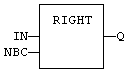
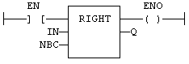

Function
Extract characters of a string on the right.
|
Name |
Type |
Description |
|
IN |
STRING |
Character string. |
|
NBC |
DINT |
Number of characters to extract. |
|
Name |
Type |
Description |
|
Q |
STRING |
String containing the last NBC characters of IN. |
In LD language, the operation is executed only if the input rung (EN) is TRUE. The output rung (ENO) keeps the same value as the input rung. In IL, the first input (the string) must be loaded in the current result before calling the function. The second argument is the operand of the function.
Q := RIGHT (IN, NBC);

The function is executed only if EN is TRUE.
ENO keeps the same value as EN.
